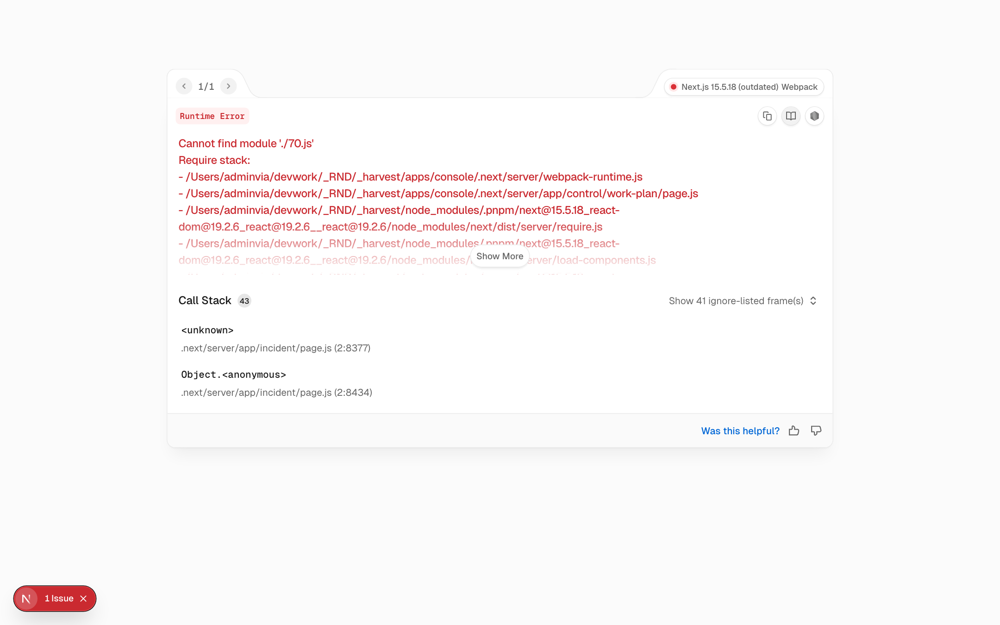
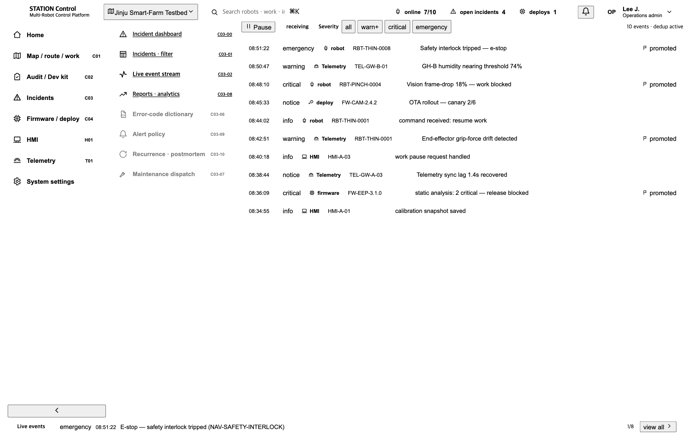
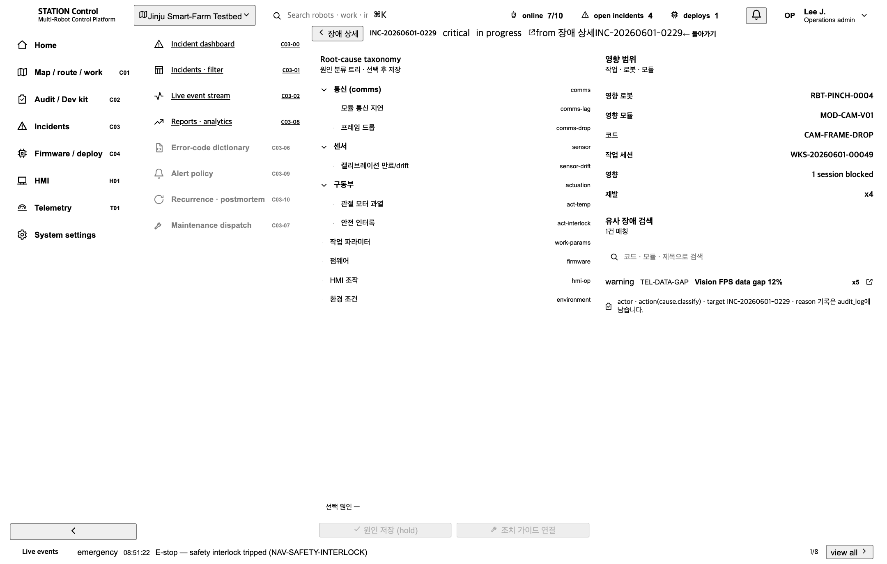
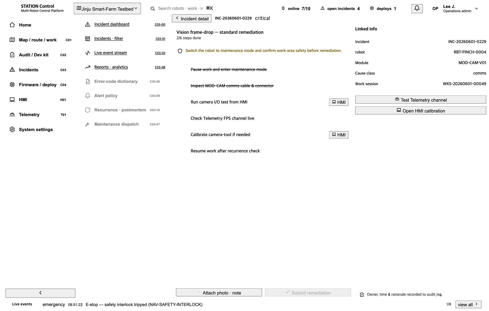
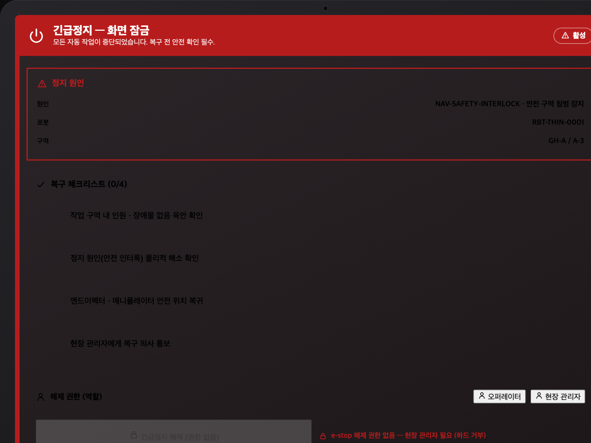
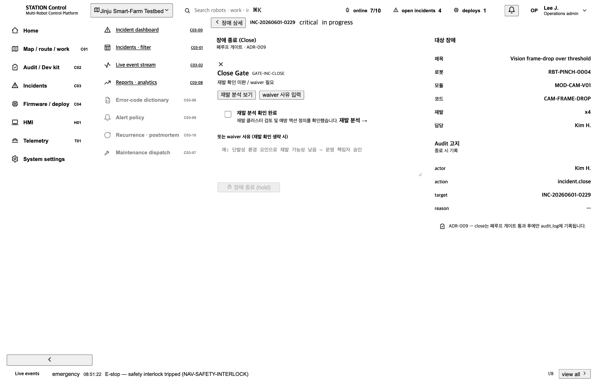

어느 기관 모듈에서 문제가 나도 — work_session_id·module_id 스파인 덕에 한 시스템에서 원인까지 추적·조치하고, 필요 시 펌웨어 개선으로 연결(폐루프)한다. 메타·에이지·대동·KIRO/농과원 어느 벤더의 모듈이 원인이어도, 이벤트→장애→원인→조치→Close가 같은 흐름으로 흐른다.


module_id·firmware_id가 원인인지 taxonomy tree로 추적하고, 같은 모듈을 쓰는 다른 로봇까지 영향 범위를 산정한다.


